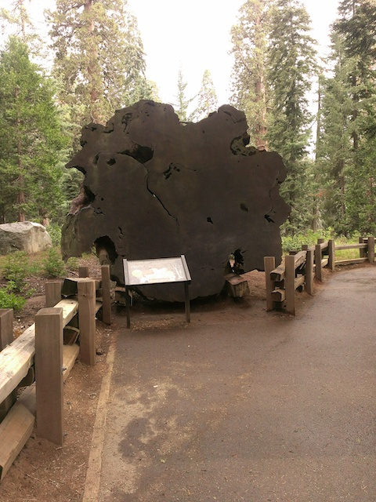

| |
Tule River 2015
All right. Time for another update. You may have forgotten this, but we also do cliff jumping updates on Incrediblecoasters as well as roller coaster updates. It's just been a while since our last cliff jumping update. Because...yeah. The 2015 Cliff Jumping Season has not been good. Considering all the problems with the Southern California Cliff Jumping Spots, ranging from incredibly low water levels thanks to that stupidass drought that's only getting worse, and a bunch of other bullsh*t that makes me want to tase a long list of people and enrages me to my inner core. So yeah. The 2015 Cliff Jumping season has so far been pretty bare as we've only gone cliff jumping at Hermit Falls once this year, which BTW, is now a horrible depressing polluted as hell dump now. So this is our 2nd cliff jumping season, and our 2015 jumping season is gonna primarily take us to places up in Nor Cal and Central Cal that we've never been before. Like today, we're heading out to Tule River, which is a new cliff jumping spot for us.
I really hope this windy road is taking us to the right place.
Ooh! I really like the look of this place! =)
ALL HAIL THE MAGIC CONCH!!!
Don't pollute this place that looks with glass bottles. Seems easy enough.
REALLY!!? I seriously hate humanity.
PICK UP YOUR F*CKING TRASH!!!
Hey, it may not be a 70 ftr, but this was a really good 40 ftr. And I'm just happy to have more cliff jumps this year. =)
According to L.A Swimming, this place has a big waterslide. Bigger than the Big Tar Creek one. But I never found it. And unfortunetly, most of the other pools, while pretty, were pretty inaccessible, unless I wanted to completely swim with all my stuff. And sorry, but my smartphone can't get wet. Not to mention, trying to trek through those feilds in swim shorts is HORRIBLE AND ITCHY!!!
Once again, PICK UP YOUR F*CKING TRASH!!!
Ooh, I like the train track bridge here.
All right. We had fun at Tule River. Now to make the day even better, how about we head into the Sequoias and see the worlds biggest tree. Sounds good to me! =)
All right. Screw that road to Glass Beach. THIS is the windiest road I've ever been on. And I enjoyed it.
Yep. We've officially made it to the Sequoias.
♫Because I'm tacky!♫
All right. Now let's get to the reason why we came. General Sherman!
Now for those who don't know. General Sherman is the biggest tree in the world. Not the tallest per se, but just the biggest. It's a fat f*cker and yeah. It's just MASSIVE!!!
And while it's not the tallest tree in the world (went there on the Glass Beach road trip), it's still pretty damn big.

Just in case you weren't certain that this was a fat tree.
Once you do the Drive-Through Tree, the Walk-Through Log just seems like a bore.
TL:DR, Don't be a dumbass!!
HOLY SH*T!! A Black Bear. Not the first time we saw a Black Bear. But this time, we don't have a car to protect us. Meh, Black Bears just want to be left alone. We should be fine since none of us are dumbasses.
Fun fact. Forest Fires can be mildly healthy to forests. I know it sounds counter-productive because during fires, if certain brushes are burned in small fires, that can help prevent a much more deadly and dangerous fire that'd kill people and destroy property. Also, controlled fires help germinate the seeds of certain forest trees. And NO!!! You can't use this as an excuse to be an asshole arsonist.
"I see in your future, you will...Sh*t!! I'm really stuck in here!!"
OH F*CK!!! That's a brown bear, which is MUCH more likely to see us as prey. And on top of that, she has a cub with her. OK, we're out of here. Bye everyone.
Home
|